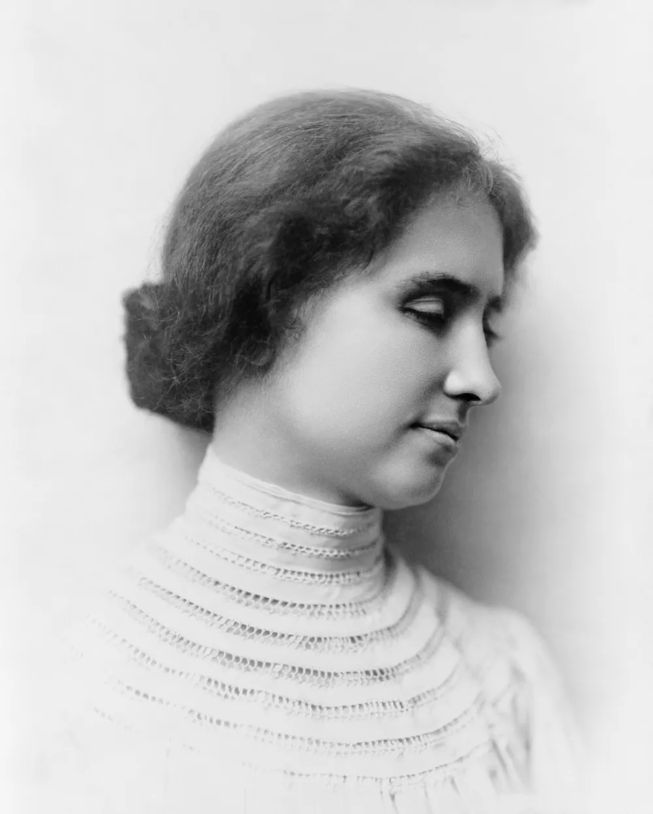

성장 과정
저의 어렸을 적 많은 지역을 옮겨 다녔습니다.
서산 출생
 부산..대전..당진..등등등..
부산..대전..당진..등등등..
계속해서 지역을 옮겨 다니기도 했고 어려운 집안 환경덕에 저는 많은 어려움을 겪으며 살고는 했습니다.
이러한 상황에서 저에게 큰 영향을 준 일이 생겼습니다.
영향을 준 사건
제게 가장 큰 영향을 준 사건은 아무런 취미와 목표가 없던 저에게 코딩이라는 취미를 발견하게 된 것입니다.
코딩이라는 취미를 발견하고 나서부터 저에게는 이것이 하나의 목표로 발전하게 되었습니다.
그렇게 목표가 생긴 저는 인간 관계를 더 잘 다지기 시작했고 바닥을 치던 성적도 정점을 찍기 시작했습니다.
저는 그렇게 공주대학교 컴퓨터공학부에 입학을 했고 앞으로 프로그래머라는 꿈을 가지고 더 나은 미래를 꿈꾸고 있습니다.
영향을 준 인물
저에게 영향을 준 인물은

헬렌 켈러
헬렌 켈러
헬렌 켈러는 1880년에 미국 알라배마주 타스케지(Tuscumbia)에서 태어났습니다. 19개월 동안 시행착오 끝에 이끌려 언어를 잃은 채, 어둠 속에서 성장해야 했습니다. 그러나 7세 때 앤 서리언(Anne Sullivan)이라는 가정 교사와의 만남이 그녀의 삶을 완전히 바꿨습니다.
앤 서리언은 헬렌에게 언어를 가르침으로써 그녀가 커뮤니케이션을 할 수 있도록 도왔습니다. 헬렌은 새로운 세상을 발견하고, 언어와 의사소통의 힘을 알게 되었습니다. 그 후 헬렌은 교육을 받고, 수많은 언어와 문학을 습득하며 자신의 역량을 키워나갔습니다.
헬렌 켈러는 언론을 통해 자신의 이야기를 알리고, 사회적 평등을 위한 운동가로서 성장했습니다. 그녀는 장애인의 권리와 교육을 촉구하고, 더 나은 생활을 위한 여러 가지 조치를 취했습니다. 특히 장애인을 위한 특별 교육의 필요성을 강조하고, 이를 위해 수많은 연설과 글을 썼습니다.
헬렌 켈러의 삶은 그 자체로도 위대한 업적이지만, 그녀가 아픔과 어려움을 이겨내고 발전해나가는 과정에서 우리는 힘과 용기를 얻을 수 있습니다. 그녀의 열정과 결단력은 많은 사람들에게 영감을 주었으며, 그녀의 영향력은 오늘날에도 계속되고 있습니다.
앤 서리언은 헬렌에게 언어를 가르침으로써 그녀가 커뮤니케이션을 할 수 있도록 도왔습니다. 헬렌은 새로운 세상을 발견하고, 언어와 의사소통의 힘을 알게 되었습니다. 그 후 헬렌은 교육을 받고, 수많은 언어와 문학을 습득하며 자신의 역량을 키워나갔습니다.
헬렌 켈러는 언론을 통해 자신의 이야기를 알리고, 사회적 평등을 위한 운동가로서 성장했습니다. 그녀는 장애인의 권리와 교육을 촉구하고, 더 나은 생활을 위한 여러 가지 조치를 취했습니다. 특히 장애인을 위한 특별 교육의 필요성을 강조하고, 이를 위해 수많은 연설과 글을 썼습니다.
헬렌 켈러의 삶은 그 자체로도 위대한 업적이지만, 그녀가 아픔과 어려움을 이겨내고 발전해나가는 과정에서 우리는 힘과 용기를 얻을 수 있습니다. 그녀의 열정과 결단력은 많은 사람들에게 영감을 주었으며, 그녀의 영향력은 오늘날에도 계속되고 있습니다.
저도 고통스럽고 힘든 시절을 겪어 왔던 만큼 헬렌 켈러의 이러한 이야기는 저의 귀감이 되었습니다